Helpshift — Redefining the Help Center
UX Lead · 2021–2022
The Help Center is where customers solve problems on their own — before they ever reach an agent. Helpshift's had gone stale and was losing the company clients. Over seven months as UX Lead, I rebuilt it into a modern, modular, brandable experience — for consumers and for the brands that run it.
Project overview
The Help Center hadn't meaningfully changed since 2017. Edits needed custom CSS most clients couldn't write — so it slowly fell behind, and brands started leaving for competitors. Fixing it was one of Helpshift's top customer asks.
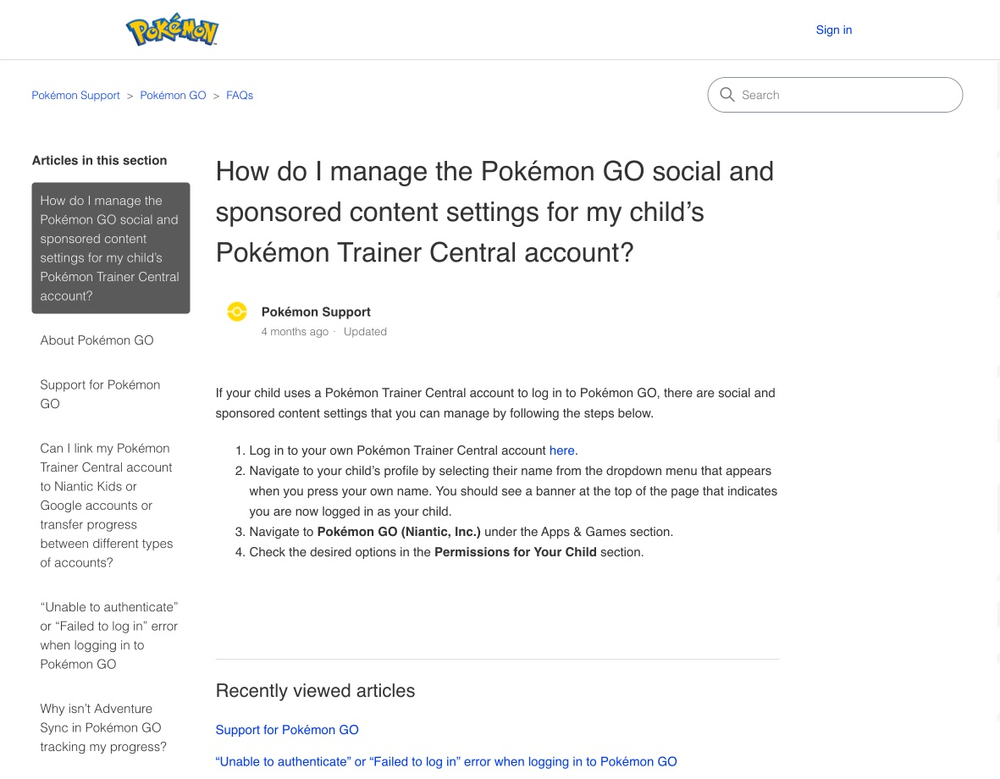
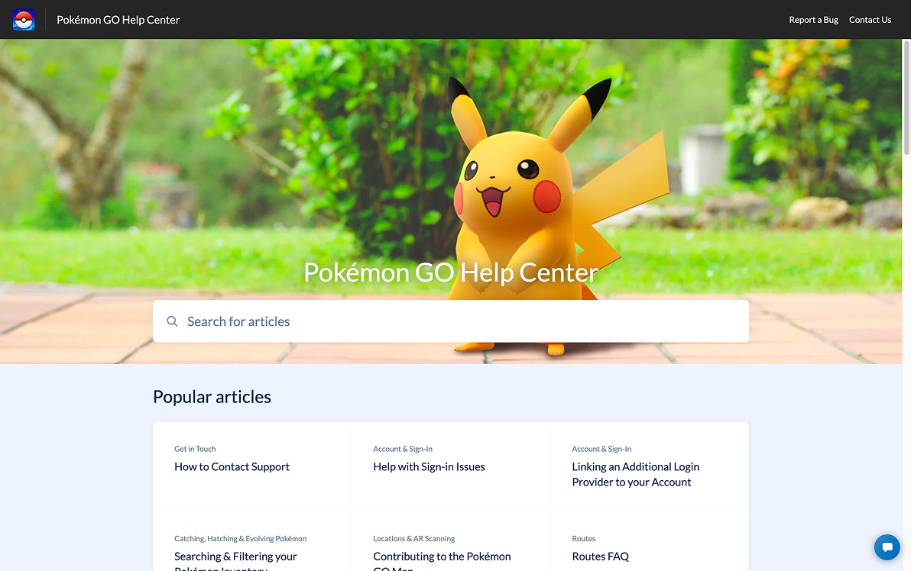
The redesign shipped — explore it live in the Pokémon GO Help Center ↗.
Quarterly Customer Success surveys and 28 client interviews kept surfacing the same frustrations:
- “The consumer experience feels completely outdated.”
- “My agents keep repeating in chat what's already published.”
- “Brands have a hard time keeping their content updated and on-brand.”
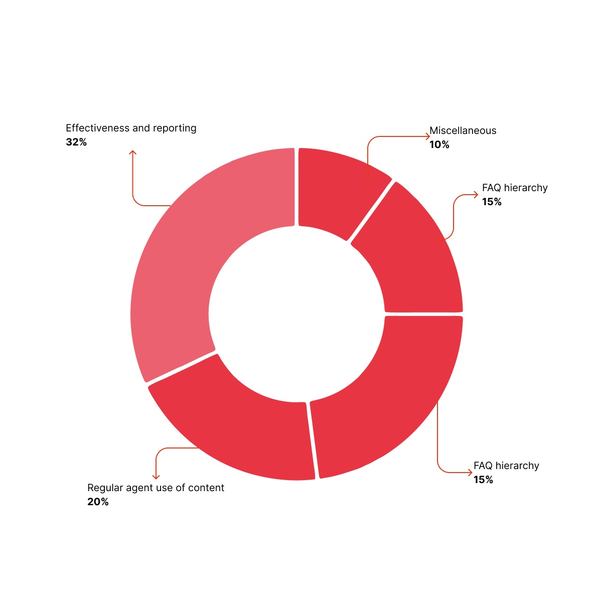
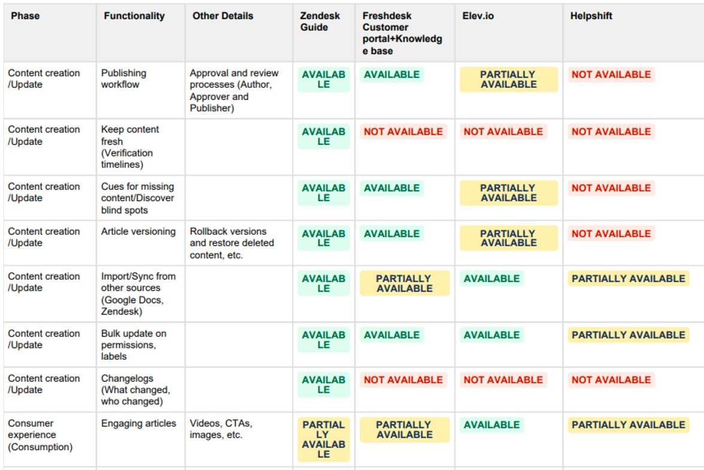
A consumer can arrive from anywhere — and behind them sit the people who keep the answers flowing. I designed for all three.
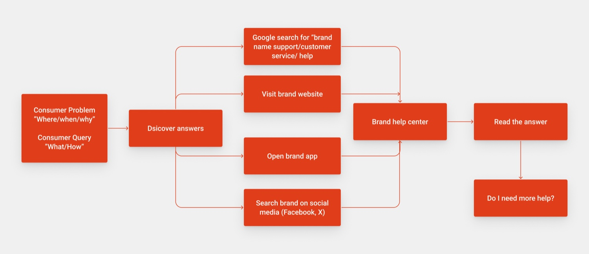
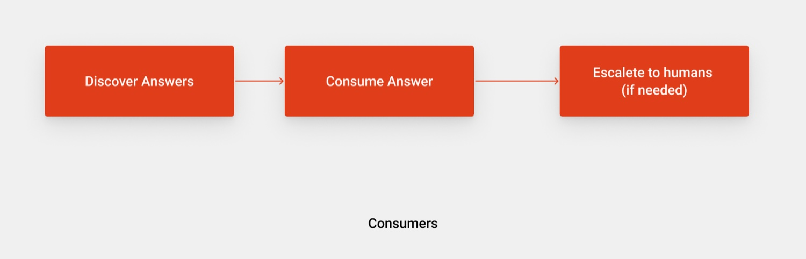
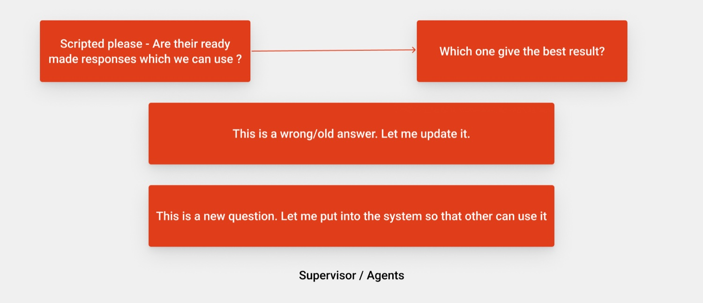
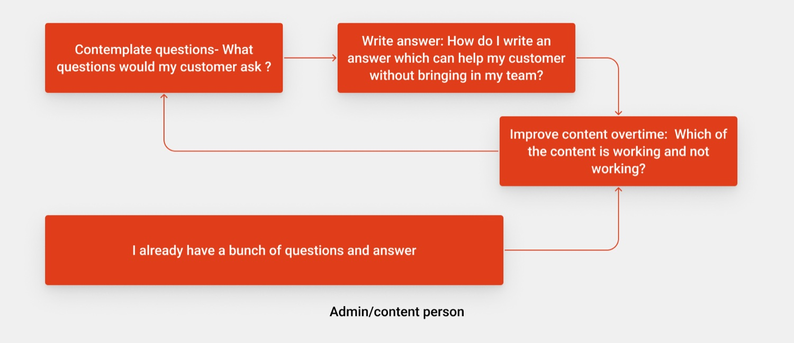
Two principles drove every decision: make answers effortless to discover, and make the experience modular — widget-based, so brands feel in control and Helpshift can ship new capabilities without disrupting anyone. I shaped the consumer journey into three stages:
- Discover — surface the right answer fast: Smart Intents, AI search, trending content, related articles.
- Consume — help people read efficiently: estimated read time, progress, jump-to-section, helpfulness.
- Escalate — only when needed: route to chat, call, or email by issue type, and capture why.
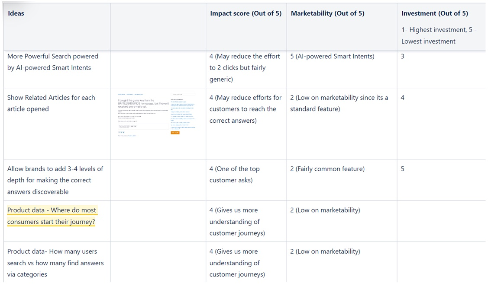
Before designing, I tore down the best help centers around — section by section.
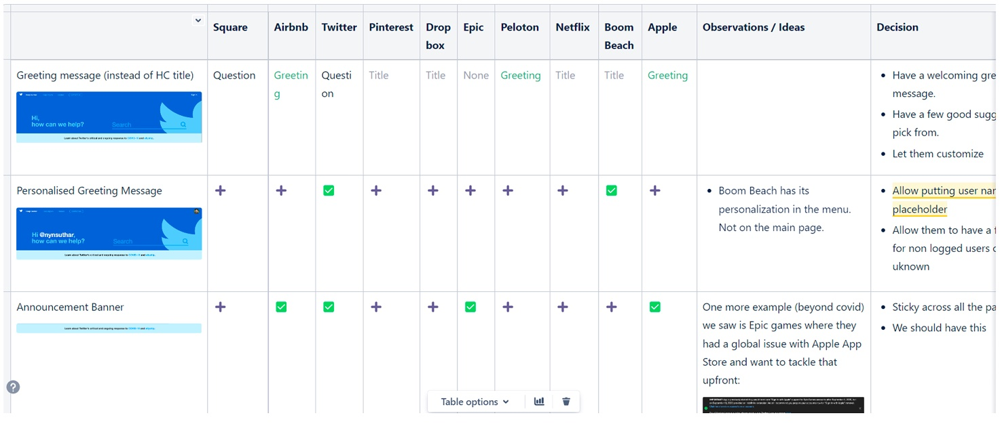
Designed responsively for web, tablet, and mobile — in both portrait and landscape.
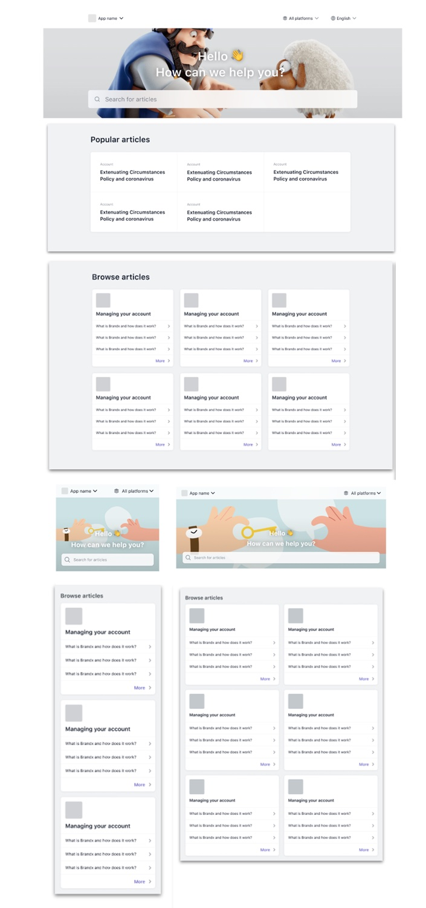
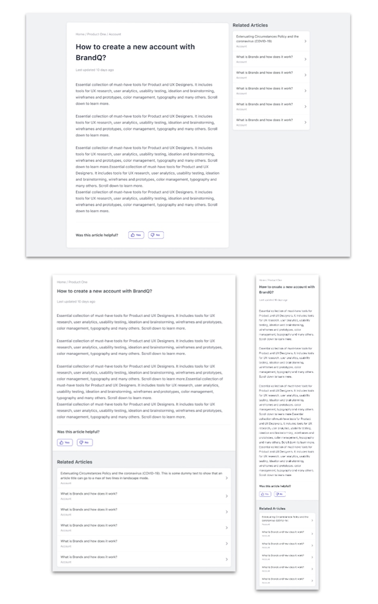
See it in action — the live Pokémon GO Help Center ↗.
The other half of the work: a Branding & Customization tool that lets any brand shape its Help Center without touching code — across four areas, each with a live preview.
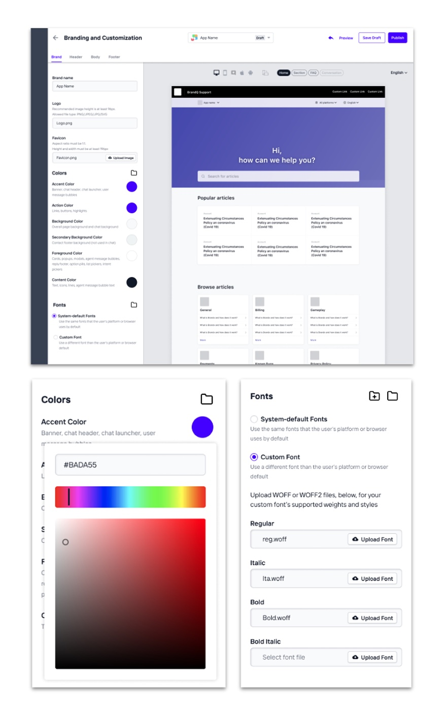
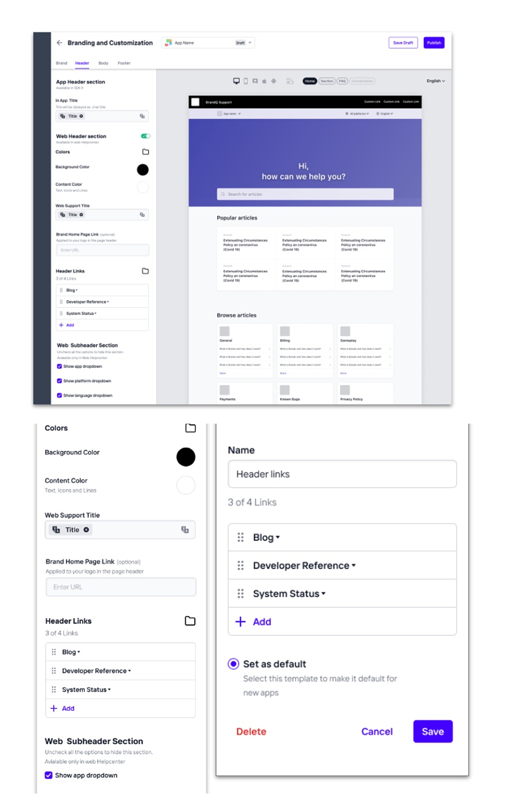
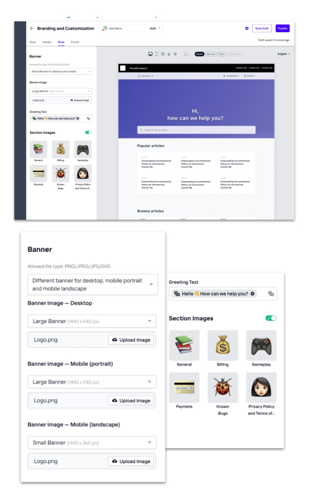
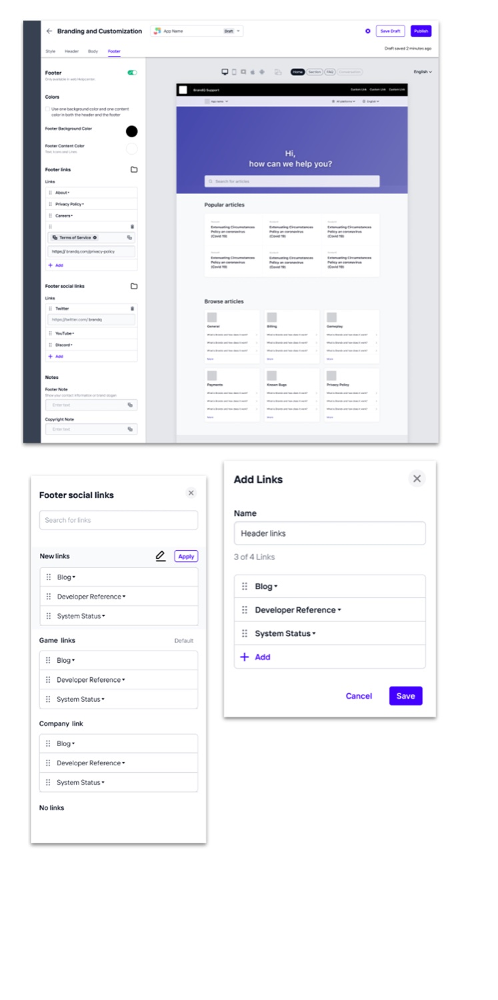
I validated the work in regular sessions at two levels — prototype (flow) and design (visual detail).
The impact